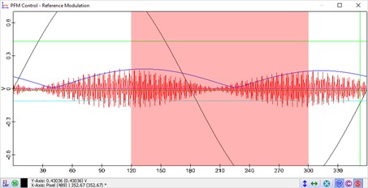

|
参数
|
按照 提升模式步骤 中的说明操作。
每行时间（轨迹）[s] 应根据 每行点数 的值来设置。每个像素至少分配 0.01 s，以防止数字化（256 点对应 2.56 s）。
测量 Z 偏移 在大多数情况下应为负值（例如 -150 nm），因为第二通道中悬臂梁的幅度要小得多。
CPD 显示 KPFM 图像和曲线。
图 1 显示了 KPFM 测量第二通道期间的 PFM 控制窗口。红线显示 T-B 信号，蓝线是 T-B 信号的平滑幅度（相移是由滤波引起的），红色区域是最小值的搜索范围，黑线（默认情况下为白色）显示 VDC。T-B 信号最小值处的 VDC 值被用作 CPD 图像的值。蓝线应显示两个尖锐的最小值。如果不是，请检查 样品安装和连接。

所有与 VAC 和 VDC 相关的设置在测量开始时自动设置。尽管如此，测量开始后仍然可以更改设置。所有有用的参数总结在 开尔文探针控制 部分。
提示